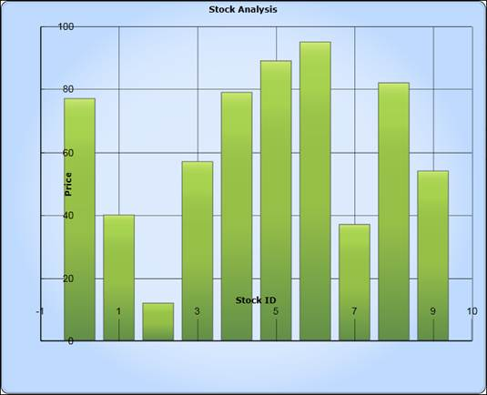
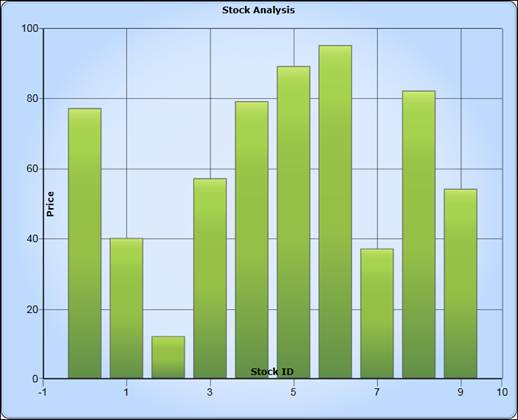
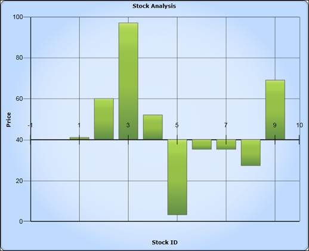

|
[XAML] <sync:ChartAxis Header="Stock ID" ChartLabelPosition="Inside" ChartTickLinesPosition="Cross" TickSize="15" ChartTickLinesRange="1" HeaderPosition="Cross" LabelPosition="Low"
/> |
|
[C#] chart1.Areas[0].PrimaryAxis.ChartLabelPosition = AxisPositions.Inside; chart1.Areas[0].PrimaryAxis.ChartTickLinesPosition = AxisPositions.Cross; chart1.Areas[0].PrimaryAxis.ChartTickLinesRange = 0.5d; chart1.Areas[0].PrimaryAxis.HeaderPosition = AxisPositions.Cross; |

Figure 125: TickPoistion, LabelPosition, and Header Position Set as Inside

Figure 126: Header Position Set as Inside

Figure 127: Axis Labels set to NextToAxis